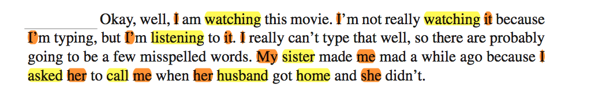
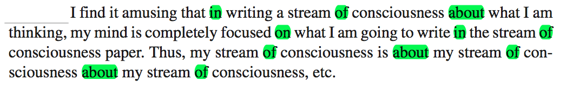

-> To what extent do women and men differ in their language use
-> Try to analyze gender differences across multiple linguistic categories and multiple contexts
(Mulac, Bradac, Gibbons 1988)
(Robin Lakoff 1975)
(Biber, Conrad, Reppen 1998)
– more intensive adverbs
– more conjunctions (“but”)
– more modal and auxiliary verbs (“could”)
– more first person plural
– longer words
– more articles
– more references to locations
– e-mail communication found that men and women were equally likely to ask questions
– men used more negations and asked more questions – women posed more directives
– studies do not take into account context
“One researcher’s uncertainty verb phrase is another’s hedge”
Analysis of the correlation between gender and sentence length:
-> significant (p < .05) effect size (d) of .12
-> sample of over 2,000 people
-> mean words-per-sentence was 23.4 for men and 19.1 for women
-> with a standard deviation of 35.1
Pennebaker and Stone (2003)
-> 11,609 participants, -> approximately 45,700,000 words -> 14,324 final text files, with 5,971 written by men and 8,353 written by women.
-> Used as text preprocessing to filter out relevant categories (or features) which might be relevant for gender differentiation
–> LIWC defines a total of 74 categories
–> LIWC takes into account both function words and content words
–> but also more abstract entities like POS.
–> 54 language dimensions.
Click hier –> Link to the categories
 
| Women | Men | Example | |
|---|---|---|---|
| Linguistic Processes | |||
| Total Function Words | 37 | 26 | |
| Adverbs | 5 | 3 | “very”, “really” |
| Article | 2 | 2 | “a”, the” |
| Prepositions | 3 | 10 | “to”, “with” |
| Personal Pronoun | 11 | 7 | “us”, “them” |
| First Pers. Pronoun | 8 | 7 | “I” |
| Total Verbs | 10 | 3 | |
| Present tense verbs | 5 | 3 | “is”, “does” |
| Auxiliary Verbs | 7 | 3 | “am”, “will” |
| Psychological Processes | |||
| Affective processes | 3 | 1 | “cried”, “abandon” |
| Positive emotions | 2 | 1 | “love”, “nice” |
| Social processes | 8 | 1 | “mate”, “talk” |
| Cognitive processes | 9 | 10 | “cause”, “know” |
| Relativity | 4 | 3 | “exit”, “area” |
| Total | 134 | 96 |
-> MANOVA (Multivariate Analysis Of VAriance)
–> F(53; 14,270) = 30.66 –> p < 0.05
| Females | Males | Null effect | Effect size (d) |
|---|---|---|---|
| pronouns | .36 | ||
| present-tense verbs | .18 | ||
| word-legth | .24 | ||
| numbers | .15 | ||
| articles | .24 | ||
| prepositions | .17 | ||
| social words | .21 | ||
| positive feelings | .15 | ||
| anxiety | .16 | ||
| swear words | .22 | ||
| occupation | .12 | ||
| word count | |||
| question marks | |||
| sex |
-> comparation of the average effect size for function words categories with the average effect size for the content words categories:
– Content words: verbs (feeling, hearing, insight…) => d = .10
– Content words: nouns (friends, family, occupation, money, metaphysical…) => d = .11
– Function words (articles, prepositions, pronouns…) => d = .20
-> When considering single registers effect sizes can change their sign
| Emotion | Time M. | SoC | Fiction | TAT | Exams | Conversation | ||
|---|---|---|---|---|---|---|---|---|
| pronouns | .36 | .25 | .20 | .33 | .79 | .30 | .46 | .03 |
| present verbs | .18 | .14 | .04 | .17 | .28 | .09 | .41 | -.21 |
| word-legth | -.24 | -.16 | -.04 | -.09 | -.32 | -.17 | -.45 | -.44 |
| numbers | -.15 | -.09 | -.15 | -.13 | -.37 | -.10 | -.09 | 14 |
| articles | -.24 | -.21 | -.07 | -.33 | -.70 | -.22 | -.05 | -.77 |
| prepositions | -.17 | -.11 | -.09 | -.12 | -.26 | -.09 | -.11 | -.74 |
| anxiety | .16 | .13 | .05 | -.09 | .04 | .12 | -.30 | .16 |
| swear words | -.22 | -.14 | -.10 | -.24 | -.28 | -.12 | -.06 | -.43 |
| Register | Effect size (d) |
|---|---|
| Fiction | .31 |
| Conversation | .26 |
| Exams | .22 |
| SoC | .11 |
| TAT | .09 |
| Emotion | .08 |
| Time Management | .08 |
-> Small and subtle differences but consistent and systematic
-> Function words are found to be the best discriminators
-> Mainly, the following variables: word length, articles, swear words, social words and pronouns
-> Further work is needed (the article was published 2009!) in reavealing the “why”
The phenomenon analized consists on a entire range of variables that:
-> act together, holistically (as opposed to the markers analyzed before)
-> are rather abstract and non-salient (frequencies of function words, etc…)
-> to what extent can this be considered to be relevant to active construction of identity?
-> could we explain this as a result of a unconsciously inherited language style?
Check the paper!
“Gender differences in language use” Newman et alii (2009)